1、请分析检材一，该取证录像文件的 SHA256 值为？
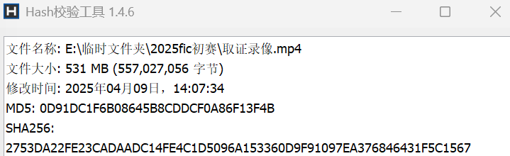
2753DA22FE23CADAADC14FE4C1D5096A153360D9F91097EA376846431F5C1567
2、请分析检材一，远程取证所使用的 OBS 工具版本号为？
29.1.3
3、请分析检材一，该检材所使用的远程取证的工具名称为？
网镜
4、请分析检材一，在该检材中，远程取证过程中校验的北京时间为？
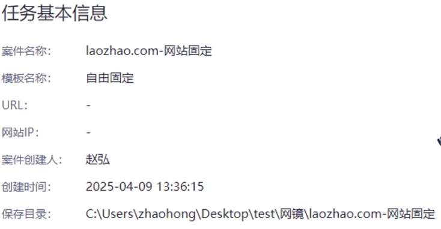
2025/4/9 13:36:18
5、请分析检材一，远程取证的网站 IP 地址为？
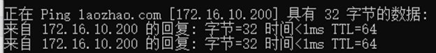
172.16.10.200
6、请分析检材一，在该检材中，远程取证的网站密码为？
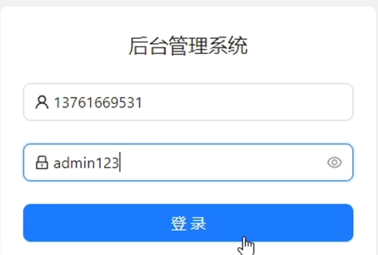
admin123
7、请分析检材二 “手机” 检材，该手机的 device_name 是？
全局搜索
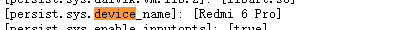
Redmi 6 Pro
8、请分析检材二 “手机” 检材，嫌疑人 pc 开机密码是什么？
笔记软件翻数据库，经典
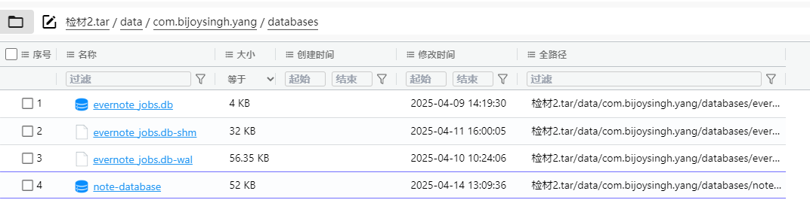
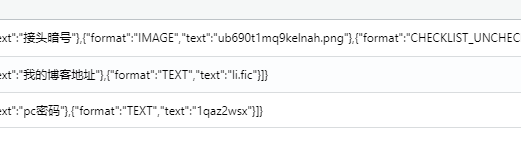
1qaz2wsx
9、请分析检材二 “手机” 检材，嫌疑人接头暗号是什么？
见上题
爱能不能够永远单纯没有悲哀
10、请分析检材二 “手机” 检材，嫌疑人存放的秘钥环是多少？
这是真想不到，原理也不知道，师傅们要是知道的话可以告诉我
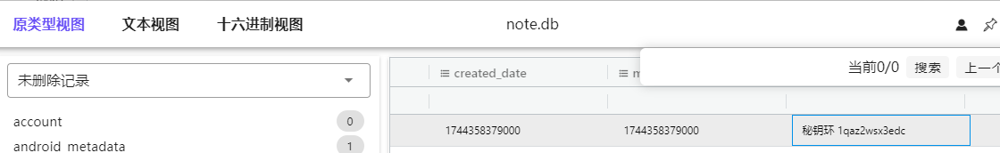
1qaz2wsx3edc
11、请分析检材二 “手机” 检材，嫌疑人一生中最重要的日子是什么时候？
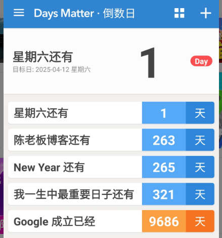
2026-02-26
12、请分析检材三 “手机” 检材，嫌疑人微信生成的聊天记录数据库文件名称是什么？
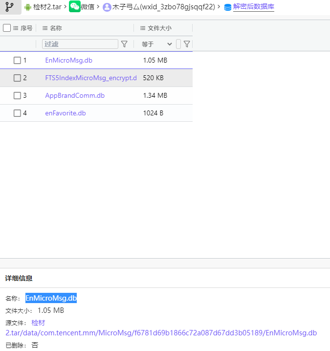
EnMicroMsg.db
13、请分析检材二 “手机” 检材，嫌疑人微信账号对应的 UIN 为多少？
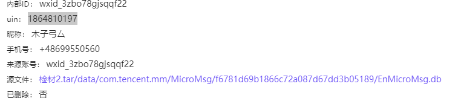
1864810197
14、请分析检材二 “手机” 检材，嫌疑人微信聊天记录数据库的加密秘钥是什么？
哇，这真是，以前看过的，结果一直没用就忘记了 感谢WXjzc佬的博客，感谢西电的wp
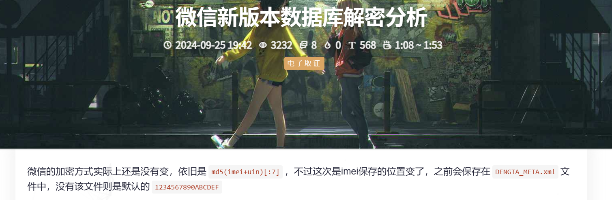
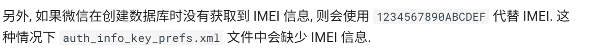
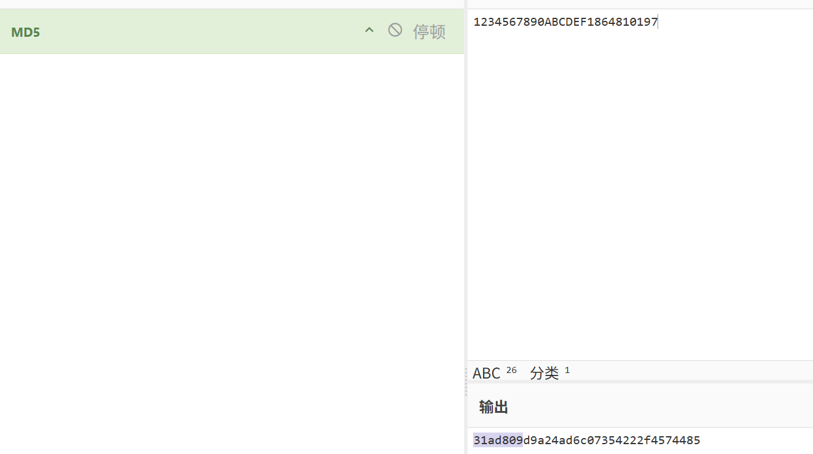
31ad809
15、请分析检材二 “手机” 检材，嫌疑人 “欠条.rar” 的解压密码是多少？
不看wp是真不会
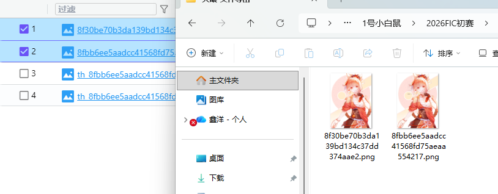
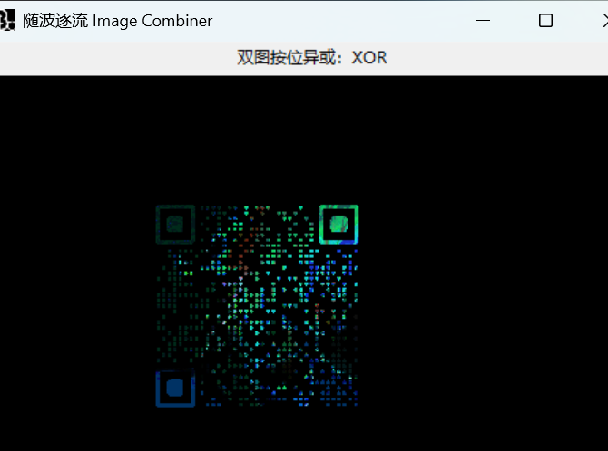
3170010703
16、请分析检材二 “手机” 检材，嫌疑人 “欠条.rar” 解压后，其中 VeraCrypt 容器的 MD5 值是多少？
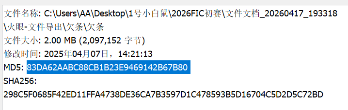
83DA62AABC88CB1B23E9469142B67B80
17、请分析检材二 “手机” 检材，嫌疑人 “欠条.rar” 解压后，其中”1.png” 图上显示的 VeraCrypt 容器密码是多少？
能隐约看到
#!@KE2sax@!da0h5hghg34&@
18、请分析检材二 “手机” 检材，嫌疑人李某全名是什么？
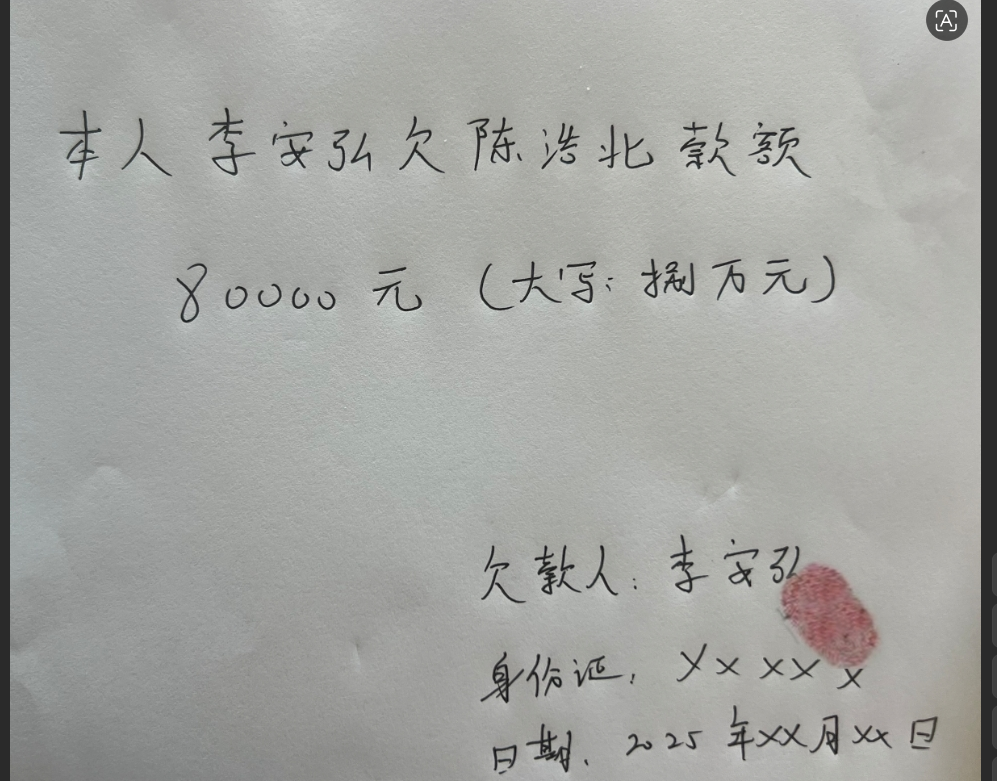
李安弘
19、请分析检材二 “手机” 检材，嫌疑人欠款金额是多少？
80000
20、请分析检材三 “电脑” 检材，该电脑最后一次开机时间是？
挺离谱的，我跟其他师傅的不太一样，我火眼给了十个开关机时间（正常好像是7个），导致答案错误了
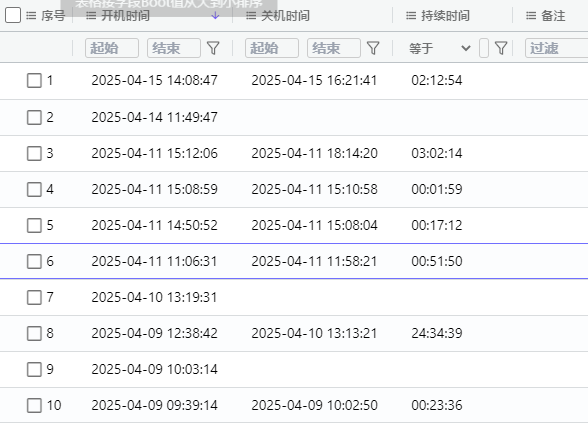
2025/4/14 11:49:47
21、请分析检材三 “电脑” 检材，嫌疑人的备用机号码是多少？
阴成啥样了
18877332134
22、请分析检材三 “电脑” 检材，域名 [dgy02.com](https://dgy02.com) 曾保存过一个密码，该密码是多少？
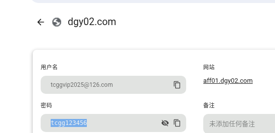
tcgg123456
23、请分析检材三 “电脑” 检材，其电脑安装的微信版本是多少？
4.0.0.21
24、请分析检材三 “电脑” 检材，该系统有哪些远程控制软件？
todesk、向日葵
25、请分析检材三 “电脑” 检材，电脑 2025 年 4 月 10 日 11 点 4 分 29 秒曾被向日葵远程控制，其记录的日志文件名为？
全局搜索
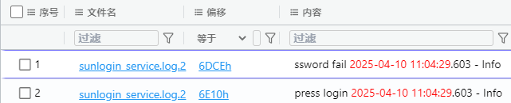
sunlogin_service.log.2
26、请分析检材三 “电脑” 检材，电脑 2025 年 4 月 10 日 11 点 4 分 29 秒曾被向日葵远程控制，日志内记录对方公网 IP 地址和端口为？
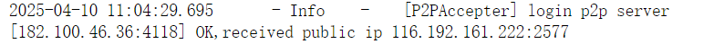
116.192.161.222:2577
27、请分析检材三 “电脑” 检材，某文件的 MD5 值为 “2bdfcdbd6c63efc094ac154a28968b7d”，该文件名为？
直觉
important.docx
28、请分析检材三 “电脑” 检材，上述文件存放了钱包助记词，第一个单词是什么？
不难，但还是直接AI了
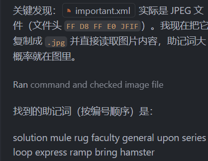
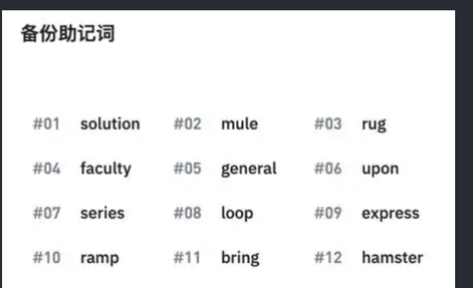
solution
29、请分析检材三 “我的测试机”，最近曾访问过的音频文件，该音频文件的文件名是什么？
火眼识别到了，直接挂载
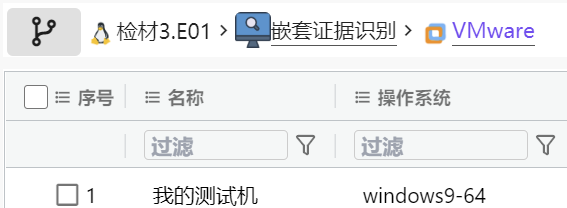
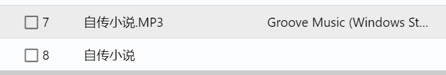
自传小说.MP3
30、请分析检材三 “我的测试机”，最近曾使用过 USB 设备，该设备的名称为？
三百块的u盘，真tm有钱
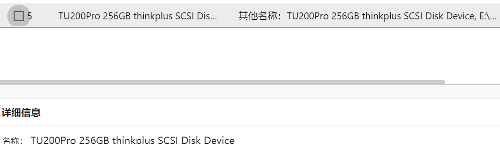
TU200Pro 256GB thinkplus SCSI Disk Device
31、请分析检材三 “我的测试机” 中的音频内容，嫌疑人现任妻子毕业的大学是？
牢！最后让夸克（手机）帮我转了文字，豆包帮我分析（nnd神秘剧情。。。）
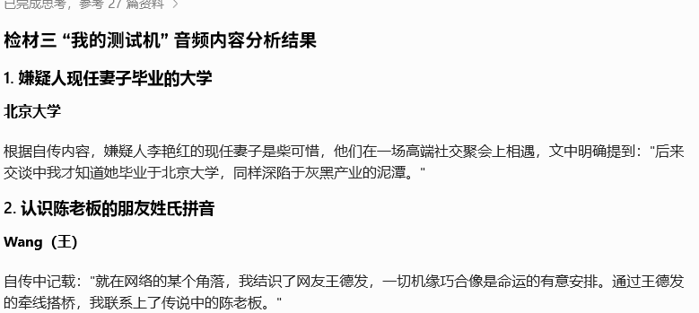
北京大学
32、请分析检材三 “我的测试机” 中的音频内容，嫌疑人是通过一个朋友认识的陈老板，该朋友姓氏拼音是？
同上 wang
33、请分析检材三 “我的测试机” 中的音频内容，嫌疑人所说的香格里拉大酒店实则是？
结合手机检材能猜出来，实际上这几个选项里就这个答案有可能 灰色产业链场所
34、请分析检材三 “我的测试机” 中的音频内容，嫌疑人银行密码是多少？
这tm是人类吗，woc,不看wp能写出来的可以确诊为跟嫌疑人一样的忧郁中二内耗人了 FIC的出题人已经远远超出一般人类的范畴了 音频被分为多段，每段的第一个字组合在一起，谐音就是答案 071492
35、请分析检材二，找到李某上游人员陈某博客宣传所用域名为？
chen.foren6
36、请分析陈某宣传所用域名，该域名的顶级域名在以下哪个区块链注册？
| 区块链 | 域名系统名称 | 支持的顶级域名 | 核心特点 | | -------- | --------------------------- | ------------------------------- | -------------------------------------- | | ETH | ENS (Ethereum Name Service) | .eth、.xyz、.luxe 等 | 基于以太坊智能合约，域名作为 NFT 存储，主要用于解析以太坊地址 | | HNS | Handshake | 任何自定义 TLD（如.com、.org、.foren6 等） | 去中心化根命名系统，无许可制，可注册任意顶级域名，使用 HNS 代币拍卖获得 | | BTC | Bitcoin | 无原生域名系统 | 比特币区块链仅用于加密货币交易，不支持域名注册功能 | | Namecoin | Namecoin | .bit | 最早的区块链域名系统，基于比特币分叉，仅支持.bit 顶级域名 | | | | | | HNS
37、请分析陈某宣传所用域名的顶级域名的域名解析服务器（DNS）共有几个？
已经开始不会了。。。菜
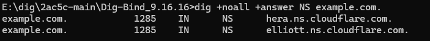
2
38、请分析陈某宣传所用域名的顶级域名的 NS1 服务器 ip 为？
39、请分析陈某宣传所用域名，该域名 DNS 记录指向邮件服务器域名为？
40、请分析陈某宣传所用域名，该域名的 txt 记录中 chen 的值为？
41、请分析陈某宣传所用域名，该域名 DNS 记录没有以下哪个域名？
42、请分析陈某宣传所用域名，该博客域名最终 DNS 解析指向的 github 仓库名为？
偷分成功，嘻嘻嘻
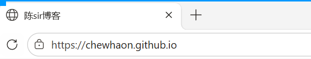
chewhaon.github.io
43、请分析陈某 github 账号，陈某对 jkroepke/2Moons 项目增改了几个文件？
44、请分析陈某 github 账号，陈某在修改 2Moons 过程中提到了什么锅底？
45、请分析陈某 github 账号，陈某在游戏 2Moons 中放置的后门连接码的密码为？
46、请访问陈某当前博客，陈某课程的扫码报名地址的域名为？
fic.forensix.cn
47、请分析陈某当前博客，通过互联网找到陈某的旧博客网站标题为？
生草
柳如烟大战霸天虎
48、请分析陈某旧博客，陈某的姓名为？
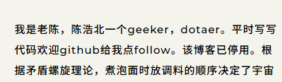
陈浩北
49、请分析陈某旧博客，陈某的邮箱地址为？
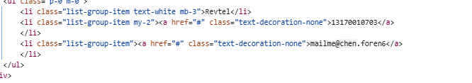
mailme@chen.foren6
50、请分析陈某旧博客，陈某的 11 位手机号为？
13170010703
51、请分析陈某旧博客，陈某最爱的 dota 英雄为？
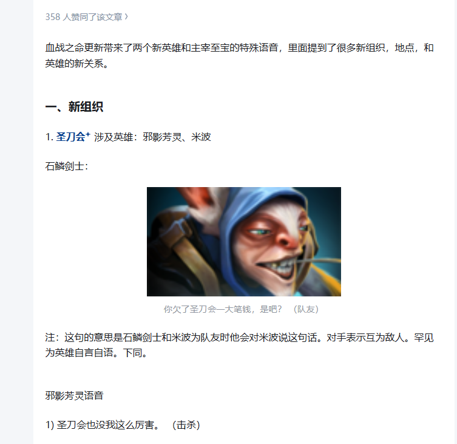
邪影芳灵